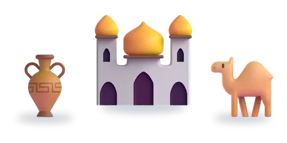
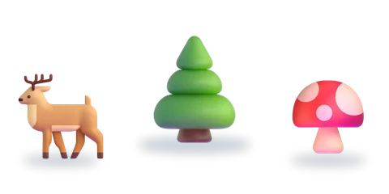

المستوى الرابع
ست وحدات، لكلّ وحدة خمسة أسابيع
اختر الوحدة، ثمّ الدرس.

الوحدة 1الحضارة المغربيةدرسان الوحدة 2المواطنة والسلوك المدني3 دروس
الوحدة 2المواطنة والسلوك المدني3 دروس- الوحدة 3الهوايات6 دروس
 الوحدة 4الفلاحة والصناعة والتجارة6 دروس
الوحدة 4الفلاحة والصناعة والتجارة6 دروس
الوحدة 5الغابة4 دروس الوحدة 6السياحة8 دروس
الوحدة 6السياحة8 دروس إثراءدروس الإثراء3 دروس
إثراءدروس الإثراء3 دروس
الرسوم: Twemoji (CC-BY 4.0) وFluent Emoji من Microsoft (MIT). الأصوات: صوت عربي اصطناعي.